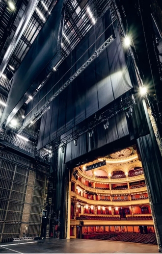
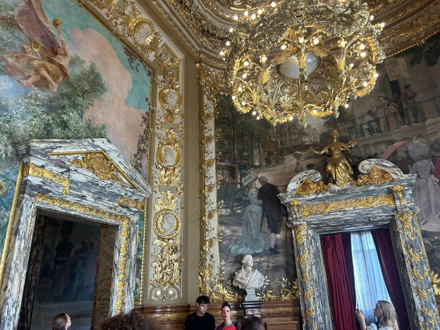

L’Opéra Comique fait peau neuve !
La place Boieldieu est prise d'assaut pendant un an. À l’entrée de l’Opéra Comique de Paris défilent ouvriers et camions. Un camp y est installé. L’opéra annonce des travaux de juin 2026 à l’automne prochain. Ainsi ne reste pour spectacle que le travail de ces petites mains qui œuvrent.
C’est pour la modernisation de la cage de scène que l’on ferme ce lieu. Les poulies dites “cintres” qui servaient à faire monter et descendre des décors vont être remplacées par un système motorisé et télécommandé. Cela permettra d’augmenter les charges à soulever à l’aide d’un contrepoids limité jusqu'à maintenant à 320 kg et un cintrier par charge. Une fois installé, le système de motorisation permettra de soulever 500 kg depuis une manette sans nécessiter une intervention physique à près de 20 m de haut au-dessus de la scène.
La fosse d’orchestre va aussi évoluer. Celle-ci est motorisée grâce à un système de vis afin de pouvoir être au même niveau que le plateau, mais découpée en deux. Son élévation est donc longue et nécessite l’activation en alterné de deux mécanismes pour mettre au même niveau l’orchestre. Le plateau d’orchestre va être unifié et le système de vis changé pour être plus rapide. L’accès à l’orchestre va être élargi pour correspondre aux normes PMR et ainsi permettre aux musiciens en fauteuil de jouer.

Les répétitions de Lucie de Lammermoor sur le plateau de l'Opéra-Comique (2026) © Stefan Brion
Finalement, une remise à niveau du plateau est aussi prévue, pour que la scène soit complètement plate et faciliter le jeu des chanteurs et l’installation de décors (à roulettes par exemple).
Coût total de l’opération : 6,3 M d’euros pour faire une remise à neuf de la cage de scène, avec la sécurisation du plancher et des dessous de scène pour rendre l’opéra plus flexible et adapté aux besoins de production.
C’est pour novembre 2027 que l’opéra a annoncé sa réouverture, une belle raison de venir découvrir les pièces du moment et profiter des nouveaux moyens de production. Bien au-delà de la scène, l’Opéra Comique est un lieu qui regorge d’histoire dont les dorures ornent encore les murs, les tableaux et balustrades.

Le “foyer” de l'Opéra-Comique (2026) © Alexandre Ligneul
Bâtie depuis 1783, inaugurée par Marie-Antoinette, reine de France, la salle Favart a été conçue afin de recevoir la haute bourgeoisie tout comme le peuple. Étalé sur 7 étages ouverts au public, plus on monte vers le “paradis”, moins les salles sont décorées. C’est un vrai retour dans une société de classe ; tandis que le rez-de-chaussée avec sa salle décorée “le foyer” est prête à recevoir des bals. Lustres aux plafonds, statues et représentation de la comédie… On ne peut être insensible à la beauté si bien conservée d’un lieu tel quel.
Atelier Yoga L’Opéra Comique National à annoncé programmer des cours de Yoga à partir de janvier 2027 dans la salle dite “foyer”. Il s’agit de la plus belle pièce du théatre, déstiné aux cocktails pendant les entractes. Une belle facon de venir dans cet opéra avant sa réouverture officielle.